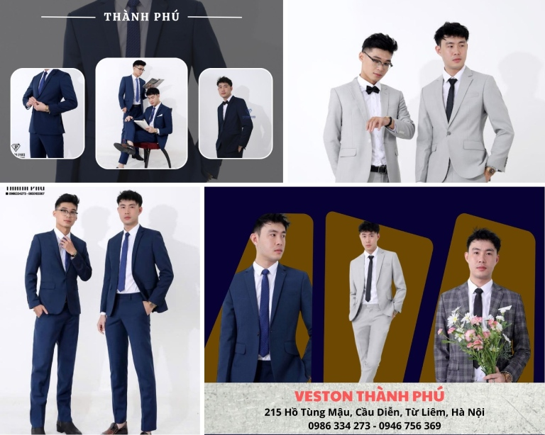
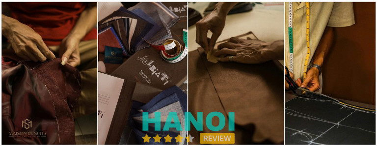
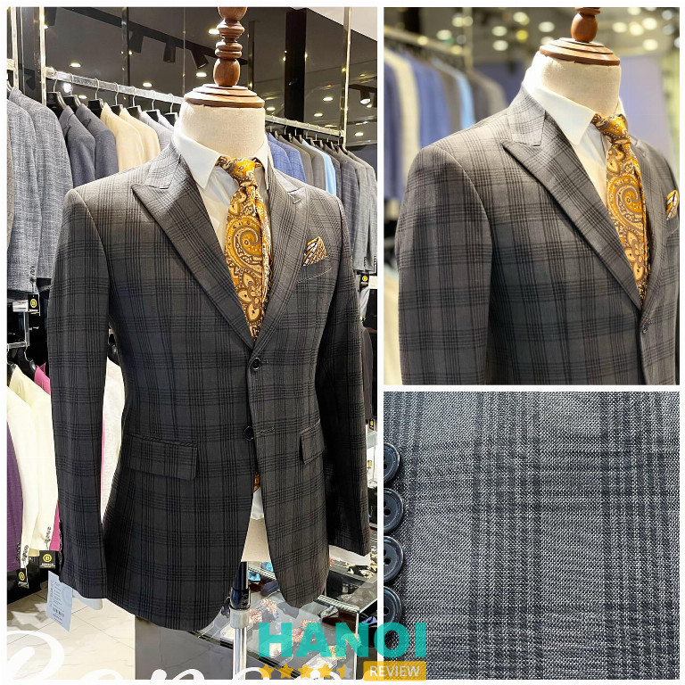
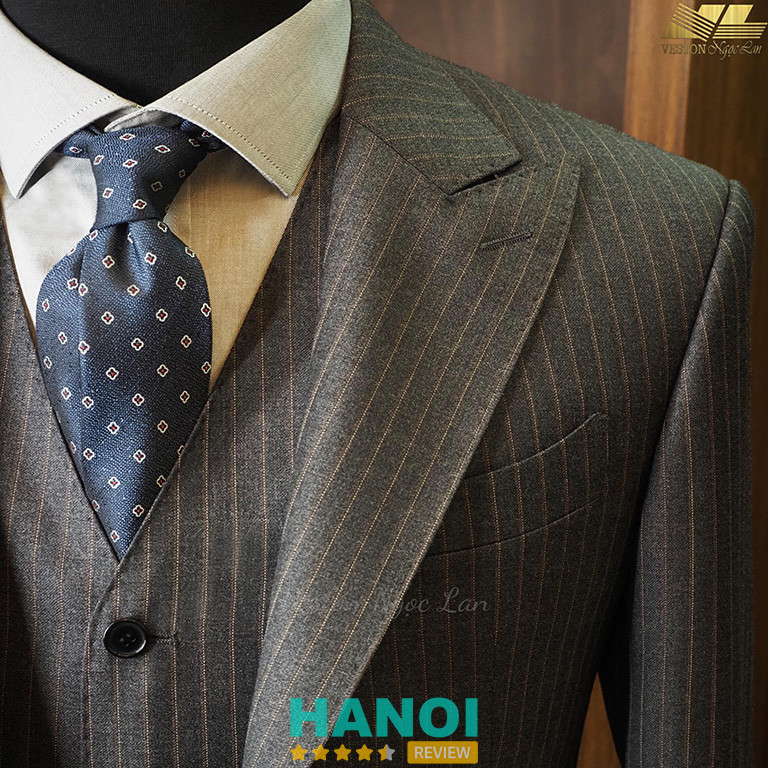
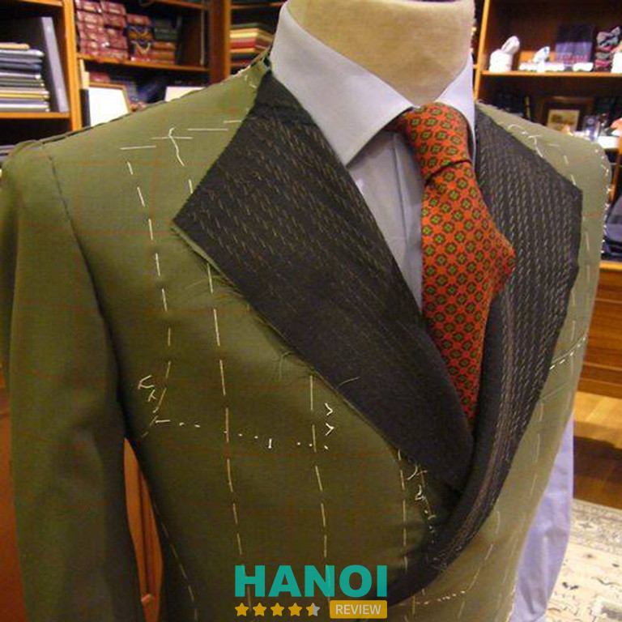
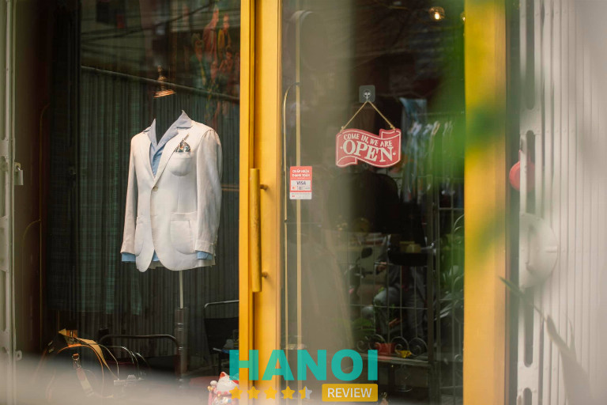
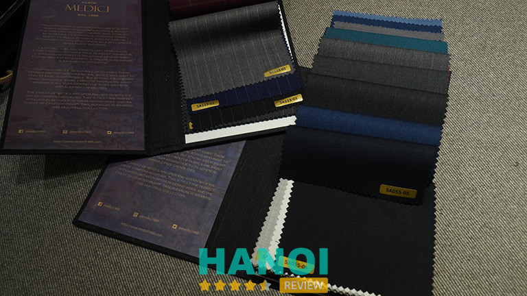

14 Địa chỉ may vest nam tại Hà Nội đẹp, đón đầu xu hướng
Nhu cầu về một bộ vest hoàn hảo, từ chất liệu đến kiểu dáng, đòi hỏi sự tỉ mỉ trong từng chi tiết. Chính vì thế, việc lựa chọn một địa chỉ may vest nam ở Hà Nội uy tín và chất lượng, có khả năng đáp ứng mọi yêu cầu này, sẽ giúp bạn tiết kiệm đáng kể thời gian và công sức.
Top 14 Địa chỉ may vest nam ở Hà Nội uy tín, tốt nhất
Một bộ vest lịch lãm và sang trọng là biểu tượng không thể thiếu trong tủ đồ của mỗi quý ông. Nếu bạn đang tìm kiếm một bộ vest may đo phù hợp với phong cách riêng của bản thân, có thể tham khảo ngay 14 địa chỉ chuyên may vest nam đẹp ở Hà Nội nổi tiếng sau đây:
Anh Tuấn Bespoke
Anh Tuấn Bespoke là một trong những nhà may vest nam nổi bật tại Hà Nội, nổi tiếng với sự kết hợp hài hòa giữa tinh hoa truyền thống và phong cách hiện đại. Xuất thân từ làng nghề may Phú Xuyên danh tiếng, thương hiệu không chỉ gìn giữ giá trị lâu đời mà còn không ngừng đổi mới, tiếp thu tinh túy từ các trường phái may đo nổi tiếng trong và ngoài nước – từ Huế, Sài Gòn cho đến Pháp và Hàn Quốc.
Với hơn 15 năm phát triển, Anh Tuấn Bespoke đã ghi dấu ấn vững chắc trong lòng khách hàng yêu thích thời trang vest nam tại Thủ đô. Thương hiệu đặc biệt được biết đến với khả năng tạo ra đa dạng kiểu dáng vest – từ form cổ điển, lịch lãm theo phong cách Châu Âu đến những thiết kế trẻ trung, hiện đại mang hơi thở Hàn Quốc. Chính sự linh hoạt này giúp nhà may đáp ứng được thị hiếu của nhiều đối tượng khách hàng, từ doanh nhân, quý ông yêu sự trang trọng cho đến giới trẻ ưa thích sự tươi mới, cá tính.
Không chỉ dừng lại ở kỹ thuật may đo thủ công tinh xảo, Anh Tuấn Bespoke còn đầu tư vào khâu thiết kế và tư vấn khách hàng. Tại đây, mỗi khách hàng đều được lắng nghe và tư vấn kỹ càng từ chất liệu, màu sắc đến kiểu dáng phù hợp với vóc dáng và phong cách cá nhân. Nhờ sự chăm chút đến từng chi tiết nhỏ, mỗi sản phẩm hoàn thiện đều mang lại sự vừa vặn, thoải mái, và thể hiện đẳng cấp riêng biệt.
Bảng giá tại Anh Tuấn Bespoke:
| SẢN PHẨM VÀ DỊCH VỤ | GIÁ (VND) |
| 1 áo vest – blazer may sẵn | 900.000 |
| 1 quần âu – sơ mi | 500.000 |
| May đo 1 áo vest – blazer sử dụng vải Hàn/ Nhật/ Trung/ Ấn Độ | 1.700.000 |
| May đo 1 quần âu – sơ mi sử dụng vải Hàn/ Nhật/ Trung/ Ấn Độ | 600.000 |
| May đo 1 áo vest – blazer sử dụng vải wool cashmere 150s,180s Eng- Italia – Aus | 3.500.000 |
| May đo 1 quần âu – sơ mi sử dụng vải wool cashmere 150s,180s Eng- Italia – Aus | 900.000 |
Anh Tuấn Bespoke không ngừng cập nhật những xu hướng trong làng thời trang thế giới, đồng thời áp dụng các kỹ thuật may mới, tạo ra những bộ vest không chỉ đạt chuẩn về chất lượng mà còn mang tính thẩm mỹ cao. Chính điều này đã giúp thương hiệu không chỉ được yêu thích bởi những người theo đuổi phong cách cổ điển mà còn chinh phục được những tín đồ thời trang hiện đại.
Từng đường kim mũi chỉ tại Anh Tuấn Bespoke đều được chăm chút tỉ mỉ bởi bàn tay của các thợ lành nghề, với tâm huyết và sự sáng tạo không ngừng nghỉ. Mỗi bộ vest tại đây không chỉ là trang phục, mà còn là một tác phẩm nghệ thuật, phản ánh phong cách sống và cá tính của người mặc.
Nếu bạn đang tìm kiếm một địa chỉ may vest nam tại Hà Nội vừa chất lượng, vừa thời thượng và bắt kịp xu hướng, Anh Tuấn Bespoke chính là lựa chọn xứng đáng để bạn trao gửi niềm tin.
Thông tin liên hệ:
- Địa chỉ: 150 Mai Dịch, Cầu Giấy, Hà Nội (Xem bản đồ đường đi)
- Điện thoại: 033 476 7336
- Website: anhtuanbespoke.com
- Facebook: FB.com/anhtuanbespoke.fb
Vest Nguyễn
Vest Nguyễn là một thương hiệu đến từ Xã Vân Từ, huyện Phú Xuyên, Hà Nội là làng nghề duy nhất trên cả nước có nghề may comple, veston nức tiếng gần xa cả trăm năm nay. Xuất hiện tại trung tâm thành phố từ năm 2012 nhưng Vest Nguyễn đã khẳng định được vị trí của mình trong thị trường bán và may đo comple – veston nhờ chất lượng và giá thành phù hợp nên đã nhanh chóng nhận được rất nhiều sự quan tâm từ phía khách hàng.
Không chỉ có các vị khách trong nước dành tình cảm cho Vest Nguyễn còn được rất nhiều sự tin tưởng của các vị khách đến từ nhiều các quốc gia trên thế giới như Hàn Quốc, Nhật Bản, Anh Quốc, Mỹ, Úc, Đức, Trung Quốc, Malaysia, Ấn Độ, Singapor, Lào….
Với nguồn nhân lực dồi dào đến từ Làng nghề cùng với sự uy tín và chuyên nghiệp thì Vest Nguyễn là sự lựa chọn số 1 của rất nhiều các công ty, tập đoàn lớn như FLC, SUNSHINE, Tập đoàn HÀ ĐÔ, Tập Đoàn TOJI, Tập đoàn CenLand, Viện Kiểm Định Vacxin Trung Ương, Ngân hàng Liên Việt Postbank VP, Bộ Tư Lệnh Cảnh Vệ 375, Ngân hàng AMC Quân Đội, Đại Học Quốc Gia Hà Nội, Tập Đoàn Khoáng Sản Vinacomin , Tập đoàn Than Vĩnh Phú…..và rất nhiều các tập đoàn, doanh nghiệp, trường học, ủy ban….
Đến với thời trang Vest Nguyễn bạn được gì?
- Mẫu mã áo compple, vest nam đa dạng phù hợp với nhiều lứa tuổi ( Vest cưới, Vest công sở, Vest Hàn Quốc, Vest Trung niên,Vest Blazer, Măng Tô, Quần âu, Sơ mi…). Khách hàng có thể mua sẵn và may đo tại cửa hàng hoặc Online ( trực tuyến).
- Thử đồ thoải mái với sự tư vấn của các chuyên gia comple – veston và chuyên nghiệp
- Đội ngũ nhân viên có kiến thức chuyên môn tư vấn kiểu cách phù hợp với cơ thể, màu da
- Mục đích sử dụng ( Ve K, Ve Nhọn, Ve Sam, 1 hàng khuy, 2 hàng khuy, xẻ sau, xẻ 2 bên, không xẻ…
- Nhiều chế độ hậu mãi giảm giá cho khách hàng khi tới lần hai hay khách hàng lâu năm
- Giá thành sản phẩm hợp lý cạnh tranh nhất trên thị trường
- Một trong những đơn vị may vest nam Hà Nội chuyên nghiệp và lâu năm được nhiều khách hàng tin tưởng
- Với đội ngũ thiết kế và thợ may đã có nhiều năm kinh nghiệm làm nghề, Vest Nguyễn luôn sẵn sàng đáp ứng mọi nhu cầu may đo của khách hàng.
Giá tham khảo:
- Giá may sẵn một bộ vest: 1.500.000 VNĐ – 3.000.000 VNĐ
- Giá may sẵn Blazer – Măng tô : 900.000 – 2.000.000 VNĐ
- Giá may đo một bộ vest theo yêu cầu về chất liệu vải:
+ Giá may đo từ 2.000.000 đến 3.000.000 VNĐ: Vải biên chỉ, tuyết mưa, chun hàn, Cashmere Anh, Cashmere Hàn (DA 70, DA 90), Superfine,…
+ Giá may đo từ 3.000.000 đến 5.000.000 VNĐ: Vải Wool Blends, Best Qualily, Fancy Worsted Suiting, Gianni Rosso, Superfine Cashmere Wool, Donatella Opera…
+ Giá may đo từ 5.000.000 đến 6.800.000 VNĐ: Vải Merino Wool, Nobility, Cashmere, Glendale,Cashmere W70 P30,Cerue – Tex, Laverton Made in England
+ Giá may đo từ 7.000.000 đến 10.000.000 VNĐ: Vải Zanielli 280grm 9oz, Gianni Roberto, Palladino, Lanificio Calvino, Luciano Sarbartino,…
Thông tin liên hệ:
- Cơ sở 1: 35 Phạm Thận Duật, Cầu Giấy, Hà Nội (xem bản đồ đường đi) – 0981 296 966 (zalo) – 0388 296 966
- Cơ sở 2: 24B Nguyễn Ngọc Nại, Thanh Xuân, Hà Nội (xem bản đồ đường đi) – 0981 296 966 – 0393 296 966
- Cơ sở 3: Làng nghề may comple Từ Thuận, Vân Từ, Phú Xuyên, Hà Nội – 0981 296 966
- Website: vestnguyen.com – vestnguyen.vn
- Page: fb.com/vestnguyen.com.vn
- Youtube: youtube.com/watch?v=mweSRDPEhT8
Veston Thành Phú
Trong danh sách những địa chỉ may vest nam đẹp tại Hà Nội, Veston Thành Phú luôn là cái tên nổi bật nhờ hơn 20 năm kinh nghiệm trong nghề và định hướng phát triển bền vững dựa trên chất lượng. Thương hiệu này gây ấn tượng mạnh với phong cách thiết kế trẻ trung nhưng vẫn giữ được nét lịch lãm đặc trưng, phù hợp cho nhiều nhu cầu và độ tuổi khác nhau.

Kỹ nghệ thủ công tạo nên sự khác biệt
Khác với mô hình may đo đại trà hiện nay, Thành Phú giữ vững triết lý làm nghề dựa trên sự tỉ mỉ và giá trị thủ công. Mỗi bộ vest đều được đội ngũ thợ lành nghề trực tiếp thực hiện từ bước cắt đến hoàn thiện. Nhờ kỹ thuật cắt chuẩn xác, sản phẩm tạo được phom dáng hài hòa cho nhiều vóc người, kể cả những form khó như dáng gầy, quá khổ hay đầy đặn.
Những chi tiết nhỏ như lựa chọn chất liệu, phụ kiện, cấu trúc phom hay độ nét của từng đường kim mũi chỉ đều được chú trọng nhằm mang đến bộ vest trọn vẹn về hình thức lẫn cảm giác mặc.
Thiết kế đa dạng – Bắt kịp xu hướng thời trang nam
Hệ thống mẫu mã của Veston Thành Phú hướng đến sự tối giản, tinh tế và hiện đại. Thương hiệu thường xuyên cập nhật xu hướng mới nhưng vẫn đảm bảo tính ứng dụng cao, phù hợp với môi trường công sở, sự kiện hay tiệc cưới. Khách hàng có thể lựa chọn từ các kiểu dáng trẻ trung đến sang trọng, đáp ứng sở thích thẩm mỹ của nhiều độ tuổi.
Các dịch vụ và sản phẩm hiện có tại Thành Phú gồm:
- May đo vest cưới, vest doanh nhân, vest công sở
- Vest may sẵn nhiều kích cỡ
- May đo đồng phục cao cấp cho doanh nghiệp, khách sạn, nhà hàng
Sự phong phú trong thiết kế giúp khách hàng dễ dàng tìm được phong cách phù hợp, từ lịch lãm cổ điển đến hiện đại tối giản.
Giá thành hợp lý trong phân khúc chất lượng cao
Dù được đầu tư chỉn chu từ kỹ thuật đến chất liệu, mức giá tại Thành Phú vẫn “mềm” hơn so với nhiều thương hiệu thuộc phân khúc cao cấp. Đây là lý do thương hiệu được nam giới Hà Nội tin chọn khi muốn sở hữu bộ vest đẹp, bền và được may đo chuẩn chỉnh mà không cần lo ngại chi phí quá cao.
Giá vest tại Thành Phú dao động trong khoảng:
- 2.500.000 – 7.000.000 đồng/bộ, tùy theo chất liệu và thiết kế
Mức giá này phù hợp với đa dạng đối tượng khách hàng, từ sinh viên chuẩn bị chụp kỷ yếu cho đến doanh nhân cần vest cao cấp.
Điểm đến đáng tin cậy cho mọi dịp quan trọng
Nhờ kinh nghiệm lâu năm, tay nghề thợ may ổn định và định hướng phát triển bám sát nhu cầu thị trường, Veston Thành Phú đã xây dựng được vị thế vững chắc trong lòng người tiêu dùng Hà Nội. Đây là địa chỉ lý tưởng cho những ai muốn sở hữu bộ vest chỉn chu, tôn dáng và được thiết kế vừa vặn đến từng chi tiết.
Thông tin liên hệ
- Địa chỉ: 215 Hồ Tùng Mậu, Cầu Diễn, Từ Liêm, Hà Nội (xem bản đồ đường đi)
- Điện thoại: 0986 334 273 – 0946 756 369
- Email: thanhphucomple@gmail.com
- Website: mayveston.com
- Fanpage: fb.com/vestonthanhphu
Maison De Suits
Tiệm May Vest Cao Cấp Hàng Đầu Hà Nội Dành Cho Quý Ông
Tại Hà Nội, Maison De Suits được biết đến như một trong những địa chỉ may vest nam cao cấp hàng đầu, nơi hội tụ tinh hoa thủ công và tư duy thời trang hiện đại. Với hơn 30 năm kinh nghiệm trong ngành may đo, đội ngũ thợ bậc thầy tại Maison De Suits không chỉ tạo nên những bộ vest hoàn hảo về phom dáng mà còn thổi hồn vào từng đường kim mũi chỉ, mang đến sự khác biệt đẳng cấp cho người mặc.
Maison De Suits tự hào mang đến tinh thần may đo cao cấp theo phong thái châu Âu – nơi đề cao sự tinh tế, chuẩn mực và khả năng tôn lên vẻ lịch lãm tự nhiên của người mặc. Lấy cảm hứng từ những nhà may lâu đời tại Pháp, Ý và các kinh đô thời trang châu Âu, phom dáng tại Maison De Suits luôn hướng đến sự mềm mại, hài hòa nhưng vẫn giữ được tính cấu trúc đặc trưng của suit truyền thống.
Dịch vụ tư vấn cá nhân hoá là điểm nhấn. Mỗi khách hàng được trải nghiệm quy trình tư vấn chuyên biệt, nơi nhu cầu và phong cách sống riêng được đặt lên hàng đầu. Đội ngũ chuyên gia sẽ lắng nghe, phân tích dáng người và đưa ra những lời khuyên chuẩn xác nhất, đảm bảo bộ suit cuối cùng là tác phẩm độc bản, thể hiện đúng đẳng cấp và gu thẩm mỹ của người mặc.
Chất liệu là linh hồn của bộ vest cao cấp. Maison De Suits luôn đặt sự lựa chọn vải lên hàng đầu, chỉ sử dụng các dòng vải danh tiếng từ Châu Âu, đảm bảo cả về thẩm mỹ lẫn độ bền vượt trội:
- Các thương hiệu nổi bật: Vitale Barberis Canonico (VBC), Drapers, và đặc biệt là Scabal – những cái tên bảo chứng cho chất lượng len lông cừu, Cashmere và mohair hàng đầu thế giới.
- Tính thời trang: Kho vải được cập nhật liên tục theo mùa (Seasonal Updates), giúp quý ông luôn sở hữu những bộ suit với họa tiết và chất liệu hợp xu hướng nhất.
Đây là cam kết về chất lượng để mỗi bộ vest Maison De Suits mang lại cảm giác thoải mái, giữ form tốt và toát lên vẻ ngoài lịch lãm không thể trộn lẫn.
Với hơn 30 năm kinh nghiệm thủ công, đội ngũ thợ may tại Maison De Suits đảm bảo chuẩn mực trong từng chi tiết, từ đường cắt đến kỹ thuật dựng form ngực (full canvas hoặc half canvas) truyền thống.
Quy trình fitting (thử đồ) được thực hiện kỹ lưỡng, không chỉ đảm bảo độ vừa vặn mà còn căn chỉnh các tỷ lệ trên cơ thể (chiều dài áo, độ rộng ve, nếp gấp quần) để mang lại vẻ lịch lãm tự nhiên. Phom dáng chuẩn mực chính là yếu tố cốt lõi giúp quý ông cảm thấy thoải mái, dễ dàng vận động mà vẫn giữ được sự đứng đắn, quyền lực.

Là một nhà may cao cấp, Maison De Suits đặt trải nghiệm của khách hàng lên trên hết, không chỉ dừng lại ở việc giao sản phẩm. Thương hiệu cam kết chất lượng với chế độ hậu mãi dài lâu, bao gồm dịch vụ chỉnh sửa, bảo dưỡng trọn đời. Sự chăm sóc này đảm bảo rằng bộ suit của bạn luôn giữ được vẻ hoàn hảo qua thời gian, đúng chuẩn của một sản phẩm được đầu tư nghiêm túc.
Với khách hàng có gu, có thời gian trải nghiệm may đo và đề cao chất lượng – Maison De Suits chính là điểm đến lý tưởng để sở hữu một bộ vest hoàn hảo cả về thẩm mỹ lẫn giá trị lâu dài.
Thông tin liên hệ:
- Địa chỉ: 111 Nguyễn Ngọc Doãn, Phường Kim Liên, Hà Nội
- Số điện thoại: 0906 235 325
- Website: maisondesuits.com
- Fanpage: fb.com/MaisonDeSuits
- Giờ mở cửa: 9h sáng – 7h tối hàng ngày
Benson
Với hơn 40 năm kinh nghiệm trong ngành may mặc tại Hà Thành, Benson là địa chỉ tin cậy cho những ai đang tìm kiếm dịch vụ may vest nam chất lượng và nhanh chóng. Cơ sở tự hào sở hữu xưởng sản xuất hoạt động với hơn 40 nhân công tận tâm, làm việc ngày đêm để đảm bảo mọi yêu cầu của khách hàng đều được thực hiện một cách hoàn hảo.

Benson cam kết đáp ứng mọi nhu cầu của khách hàng bằng cách nhận đặt may vest và hoàn thành chỉ trong 01 ngày. Điều này có thể được thực hiện nhờ vào sự am hiểu sâu sắc về nghệ thuật may mặc của đội ngũ thợ lành nghề.
Mỗi mẫu vải được lựa chọn cẩn thận và một cách trực tiếp, đảm bảo chất lượng với vải mềm mịn, không bị thô cứng và mang lại sự thoải mái cho người mặc. Benson không chỉ tập trung vào chất lượng mà còn luôn cập nhật kiểu dáng theo xu hướng thế giới, đảm bảo mỗi chiếc vest được may từ Benson đều mang phong cách hiện đại và tinh tế.
Đồng thời, đơn vị cũng cam kết thực hiện chỉnh sửa vest miễn phí trọn đời, đảm bảo sự hài lòng tối đa của khách hàng. Nếu bạn đang tìm kiếm một địa chỉ uy tín để may vest nam tại Hà Nội, Benson là nơi chất lượng, bạn có thể đặt niềm tin.
Thông tin liên hệ:
- Địa chỉ: 152 Thái Hà, P. Thịnh Quang, Q. Đống Đa, Hà Nội
- Điện thoại: 0942 800 600
- Email: thoitrangbenson@gmail.com
- Website: benson.vn
- Fanpage: FB.com/thoitrangbenson
Veston Ngọc Lan
Veston Ngọc Lan được biết đến là địa chỉ uy tín hàng đầu tại Hà Nội, đặc biệt chuyên về dịch vụ may đo vest thủ công cao cấp. Không chỉ là nơi đảm bảo chất lượng, Veston Ngọc Lan còn là biểu tượng của phong cách riêng biệt cho mỗi khách hàng.
Sử dụng chất liệu nhập khẩu cao cấp từ khắp nơi trên thế giới và áp dụng quy trình may đo 5 bước tiêu chuẩn quốc tế, tại Veston Ngọc Lan, luôn cam kết mang đến cho khách hàng những sản phẩm hoàn hảo nhất.

Veston Ngọc Lan không chỉ làm việc với sự tận tâm mà còn thấu hiểu khách hàng bằng cách lắng nghe mong muốn và nhu cầu. Từ đó, có thể tư vấn về kiểu dáng, chất liệu và những điểm cần chú ý đặc biệt để tạo ra những sản phẩm phản ánh sự hài hòa giữa kỹ thuật, vừa vặn với vóc dáng và thoải mái khi sử dụng, đáp ứng tốt nhất mong đợi của khách hàng.
Chọn Veston Ngọc Lan, không chỉ là việc mua sắm, mà là trải nghiệm tận hưởng sự đẳng cấp và phong cách riêng của bạn.
Thông tin liên hệ:
- Địa chỉ: 169 Bạch Mai, P. Thanh Nhàn, Q. Hai Bà Trưng, Hà Nội
- Điện thoại: 0243 625 0967
- Email: vestonngoclan.vn@gmail.com
- Website: vestonngoclan.vn
- Fanpage: FB.com/vestonngoclan
GỢI Ý: 10 Địa chỉ cho thuê vest nam ở Hà Nội uy tín, mẫu mã đẹp
Vest Nam Cavino
Trong thị trường may vest nam tại Hà Nội, xưởng may Cavino đã trở thành một trong những địa chỉ được nhiều người biết đến. Với hơn 20 năm kinh nghiệm trong, Cavino ngày càng khẳng định được uy tín và chất lượng của mình thông qua việc không ngừng hoàn thiện cơ sở vật chất và chuyên môn của đội ngũ nhân lực.
Xưởng may Cavino chuyên gia công các sản phẩm thời trang nam như vest, áo sơ mi, quần âu và nhiều sản phẩm khác, nhằm mang đến những sản phẩm tốt nhất đến tay khách hàng. Mặc dù phải cạnh tranh với nhiều xưởng may khác trên thị trường, nhưng Cavino vẫn giữ vững được thương hiệu của mình nhờ vào thái độ phục vụ tốt cùng uy tín trong sản phẩm.
Không chỉ được lòng khách hàng tại Hà Nội, Cavino còn đã chiếm được vị trí trong lòng khách hàng trên toàn quốc. Đến đây, bạn sẽ được trải nghiệm sự chân thành và chu đáo từ đội ngũ nhân viên giàu kinh nghiệm, tận tâm. Hơn nữa, Cavino cũng cam kết mang đến cho khách hàng mức giá cực kỳ ưu đãi, đem lại sự hài lòng và tin tưởng tuyệt đối.
Thông tin liên hệ:
- Địa chỉ: 287 Trương Định, P. Tương Mai, Q. Hoàng Mai, Hà Nội
- Điện thoại: 0982 462 860
- Email: cavinostore@gmail.com
- Website: cavino.vn
- Fanpage: FB.com/CAVINO.VN
Nhà may Ba Thành
Nhà may Ba Thành là một địa chỉ lâu đời và danh tiếng tại Sài Gòn, có mặt từ năm 1965. Sau khi hoàn thành nhiệm vụ quân sự, ông Ba Thành quyết định quay về Hà Nội và tiếp tục sứ mệnh của mình trong ngành may. Từ đó đến nay, Ba Thành ngày càng được biết đến với thương hiệu nhà may âu phục và áo dài tại phố cổ Hà Nội nổi tiếng, được “cha truyền con nối”.
Nhờ vào sự kế thừa và phát triển qua các thế hệ, Nhà may Ba Thành đã trở thành một thương hiệu quen thuộc và nổi tiếng tại thủ đô. Chuyên về việc may vest nam nữ, nhà may nổi bật với sự tỉ mỉ và tinh tế trong từng đường kim mũi chỉ, tạo nên những bộ đồ vừa ý và sang trọng.
Khách hàng cũng được đảm bảo sự thuận tiện với dịch vụ giao hàng tận nơi. Tại Nhà may Ba Thành, bạn không chỉ được trải nghiệm sản phẩm chất lượng mà còn được đón nhận sự phục vụ tận tâm và chuyên nghiệp từ đội ngũ nhân viên.
Thông tin liên hệ:
- Địa chỉ: 47 Vũ Phạm Hàm, P. Yên Hoà, Q. Cầu Giấy, Hà Nội
- Điện thoại: 0987 735 858
- Email: nhamaybathanh1965@gmail.com
- Website: maybathanh.vn
- Fanpage: FB.com/bathanh.nhamay
CleverGent
CleverGent là thương hiệu chuyên may đo và cho thuê âu phục nam cao cấp tại Hà Nội, bao gồm suit, sơ mi, tuxedo, giày và phụ kiện. Tại CleverGent, bạn có thể tìm thấy những bộ suit được thiết kế theo phong cách lịch sự, trang trọng của Anh, cũng như những mẫu casual nhẹ nhàng theo phong cách Ý và những thiết kế thời thượng từ các sàn diễn thời trang quốc tế.
Đội ngũ tại CleverGent được đào tạo bài bản và có kinh nghiệm sâu rộng, sẵn sàng đem đến dịch vụ tận tâm và chuyên nghiệp. Điểm đặc biệt của cơ sở còn nằm ở dịch vụ may đo tận nhà, nơi các chuyên gia của CleverGent sẽ trực tiếp đến nhà bạn để lấy số đo, tư vấn về chọn lựa vải và kiểu dáng phù hợp nhất.
Trong vòng 1-2 ngày, CleverGent sẽ tiến hành cắt may và thử phom đầu tiên ngay tại nhà bạn, đảm bảo mọi chi tiết được điều chỉnh kỹ lưỡng trước khi hoàn thiện. Với sự kết hợp giữa tay nghề thợ may lâu năm và sự am hiểu sâu sắc về thời trang, CleverGent tự hào là địa chỉ may đo vest nam lý tưởng cho mọi quý ông tại Hà Nội, mang đến cho bạn trải nghiệm dịch vụ đẳng cấp cùng sản phẩm tuyệt vời.
Thông tin liên hệ:
- Địa chỉ: 79H1 Lý Nam Đế, P. Cửa Đông, Q. Hoàn Kiếm, Hà Nội
- Điện thoại: 0976 644 001
- Email: Clevergent.vn@gmail.com
- Website: clevergent.vn
- Fanpage: FB.com/CleverGent.vn
Saint Stefano
Saint Stefano – nơi mang đến sự khác biệt và đẳng cấp trong thế giới thời trang nam tại Hà Nội. Đây là địa chỉ hàng đầu ở thủ đô dành cho những quý ông yêu thời trang và chất lượng. Chuyên về giầy tây và veston, Saint Stefano cung cấp dịch vụ may sẵn và may theo số đo, đảm bảo phục vụ mọi nhu cầu của khách hàng.
Với tiêu chuẩn khắt khe và chế độ bảo hành đường may trọn đời, Saint Stefano cam kết mang lại những bộ veston kỹ lưỡng và đẳng cấp. Chất liệu vải cao cấp và sự tinh tế trong từng công đoạn xử lý được thực hiện bởi những thợ may chuyên môn lành nghề nhất, tạo nên sự khác biệt đáng chú ý so với các mẫu veston may sẵn thông thường trên thị trường.
Khi đến với Saint Stefano, bạn có thể tin tưởng vào sự độc đáo và tinh tế trong từng chi tiết của sản phẩm. Đây không chỉ là địa chỉ may vest nam ở Hà Nội đẹp nên chọn, mà còn là điểm đến của những quý ông đòi hỏi sự hoàn hảo và đẳng cấp trong trang phục.
Thông tin liên hệ:
- Địa chỉ: 4B Tôn Đức Thắng, P. Cát Linh, Q. Đống Đa, Hà Nội
- Điện thoại: 0903 229 086
- Fanpage: FB.com/SaintStefanoFashion
THAM KHẢO: 10 Địa chỉ bán áo da tại Hà Nội chất lượng tốt, nhiều mức giá
Vest Andy
Andy là một trong những thương hiệu hàng đầu về vest tại Hà Nội, nổi bật với vai trò là đơn vị tiên phong trong sản xuất veston công nghiệp và là nhà sản xuất lớn nhất khu vực phía Bắc. Vest Andy cam kết cung cấp sản phẩm thời trang đáng tin cậy và dịch vụ chuyên nghiệp, xây dựng niềm tin và sự tự tin cho khách hàng suốt thời gian qua.
Vest của Andy được làm từ sợi visco chất lượng cao, đem lại cảm giác thoải mái và giữ form dáng suốt cả ngày, thúc đẩy sự năng động trong công việc và giao tiếp. Dịch vụ may đo của Andy không chỉ mang lại sự tiện ích trong đời sống mà còn làm nổi bật phong cách độc đáo trong thời trang nam, đặc biệt là trong môi trường công sở.
Mỗi đường kim, đường may tại đây đều được thực hiện tỉ mỉ và chính xác, nâng tầm đẳng cấp của từng sản phẩm. Andy cũng cung cấp dịch vụ giao hàng toàn quốc, với cam kết đóng gói cẩn thận và kiểm tra kỹ lưỡng trước khi vận chuyển, đảm bảo sự hài lòng tối đa cho khách hàng.
Thông tin liên hệ:
- Địa chỉ: 317 Kim Mã, P. Giảng Võ, Q. Ba Đình, Hà Nội
- Điện thoại: 0888 136 669
- Website: andy.com.vn
Venesto
Venesto là thương hiệu veston nam hàng đầu, chuyên sản xuất các sản phẩm bao gồm veston, sơ mi, và quần âu, mang đậm phong cách Ý. Xưởng may tự hào sở hữu hệ thống xưởng riêng, với đội ngũ nhân viên giàu kinh nghiệm, đảm bảo chất lượng sản phẩm.

Đỉnh cao của sự sang trọng và đẳng cấp được tái hiện trong từng bộ suit từ chất liệu vải hàng đầu thế giới. Với 10 năm kinh nghiệm trong ngành thời trang, Venesto đã xây dựng một mạng lưới hệ thống đại lý toàn quốc. Thương hiệu tự hào với hệ thống showroom được thiết kế theo tiêu chuẩn châu Âu, tạo nên không gian mua sắm sang trọng và chuyên nghiệp.
Venesto không chỉ là địa chỉ uy tín cho veston may sẵn, may đo, và đồ âu phong cách Ý số 1 tại Hà Nội và Hồ Chí Minh, mà còn là biểu tượng của sự lịch lãm và đẳng cấp trong thế giới thời trang nam. Vì vậy, nếu đắn đo lựa chọn giữa những địa chỉ may vest nam ở Hà Nội được chia sẻ phía trên, bạn có thể lựa chọn Venesto.
Thông tin liên hệ:
- Địa chỉ: 27 Quán Thánh, P. Quán Thánh, Q. Ba Đình, Hà Nội
- Điện thoại: 0981 398 996
- Website: venesto.vn
- Fanpage: FB.com/Venestomenswear
Tiệm May Đỏ
Tiệm May Đỏ với nhiều năm kinh nghiệm và đội ngũ thợ may tay nghề cao, đã khẳng định vị thế là một trong những địa chỉ may đo âu phục và đồng phục doanh nghiệp uy tín ở Hà Nội. Tại đây, mỗi bộ đồ được sản xuất không chỉ đáp ứng được vẻ đẹp thời thượng và phong cách thời trang hiện đại mà còn thể hiện sự tỉ mỉ trong từng đường kim mũi chỉ.
Tiệm May Đỏ cam kết mang lại những sản phẩm làm hài lòng khách hàng, đồng thời vinh dự được nhiều khách hàng lựa chọn làm bạn đồng hành trong suốt nhiều năm qua. Nếu bạn đang tìm kiếm một nơi có thể đặt trọn niềm tin để may đo vest nam, Tiệm May Đỏ chắc chắn là một sự lựa chọn lý tưởng, nơi bạn có thể yên tâm về chất lượng và dịch vụ.

Hơn nữa, Tiệm May Đỏ không ngừng cập nhật những xu hướng thời trang mới nhất và sử dụng các loại vải cao cấp từ khắp nơi trên thế giới để đảm bảo rằng mỗi thiết kế không chỉ đẹp mắt mà còn đem lại sự thoải mái tối đa cho khách hàng.
Với một quy trình làm việc chuyên nghiệp và khách hàng luôn được đặt lên hàng đầu, Tiệm May Đỏ luôn là địa chỉ may vest nam uy tín tại Hà Nội uy tín, nơi tạo ra sự khác biệt, giúp bạn tỏa sáng và tự tin trong mọi hoàn cảnh.
Thông tin liên hệ:
- Địa chỉ: 190/ 15A H1 Lò Đúc, P. Đống Mác, Q. Hai Bà Trưng, Hà Nội
- Điện thoại: 0344 669 998
- Email: tiemmay.do@gmail.com
- Website: tiemmaydo.vn
- Fanpage: FB.com/tmd.tiemmaydo
Kilee
Kilee Tailor là một trong những thương hiệu may đo vest nam hàng đầu tại Hà Nội, nổi tiếng với sự chuyên nghiệp và tay nghề cao trong ngành thời trang. Với kinh nghiệm lâu năm, Kilee cam kết mang đến những sản phẩm tốt nhất cho khách hàng, từ vest, suit, đến áo sơ mi và đồng phục công ty.
Đặc biệt, công ty còn cung cấp cả dịch vụ may đo và bán sẵn, với một loạt lựa chọn về màu sắc và hoa văn đa dạng, đảm bảo phù hợp với mọi kích thước và sở thích cá nhân.

Tại Kilee, không chỉ tập trung vào chất lượng sản phẩm mà còn chú trọng đến dáng vẻ hoàn hảo của vest may đo, đảm bảo từng sản phẩm chuẩn form dáng và phong cách. Khách hàng cũng sẽ được hưởng ưu đãi giảm 25% khi đặt sản phẩm may sẵn và may đo, cùng với dịch vụ chăm sóc khách hàng xuất sắc, tạo nên trải nghiệm mua sắm thoải mái và hài lòng.
Không chỉ giới hạn ở Hà Nội, uy tín và chất lượng của Kilee đã được khẳng định trên toàn quốc. Dù bạn cần một bộ vest cho ngày trọng đại, một suit lịch lãm cho môi trường công sở, hay đồng phục cho toàn bộ nhân viên công ty, Kilee là địa chỉ mà bạn có thể tin tưởng và lựa chọn.
Thông tin liên hệ:
- Địa chỉ: 49 Cửa Nam, P. Cửa Nam, Q. Hoàn Kiếm, Hà Nội
- Điện thoại: 0398094085
- Email: kilee.official@kilee.vn
- Fanpage: FB.com/kileeofficial
6 Tiêu chí chọn Địa chỉ may vest nam tại Hà Nội chất lượng, đẹp
Khi quyết định chọn một địa chỉ để may vest nam tại Hà Nội, việc tìm kiếm một nơi có chất lượng và đẹp là điều rất quan trọng. Bằng cách đặt ra các tiêu chí cụ thể, bạn có thể dễ dàng tìm ra địa chỉ phù hợp nhất cho nhu cầu của mình.
- Chất lượng vải: Địa chỉ uy tín sẽ sử dụng chất liệu vải cao cấp, như len, lụa hoặc sợi tổng hợp chất lượng, đảm bảo vẻ đẹp và độ bền của sản phẩm.
- Tay nghề thợ may lành nghề: Đội ngũ thợ may giàu kinh nghiệm và tay nghề cao sẽ đảm bảo sự chính xác và tinh tế trong từng đường kim mũi chỉ, tạo nên bộ vest hoàn hảo.
- Kiểu dáng và phong cách phù hợp: Địa chỉ may vest tốt sẽ có sẵn nhiều mẫu mã và kiểu dáng phong phú, từ trang trọng đến thời trang, phục vụ cho nhu cầu và phong cách của mọi khách hàng.
- Dịch vụ tư vấn, đo may chu đáo: Đội ngũ tư vấn chuyên nghiệp và tận tâm sẽ giúp khách hàng lựa chọn vải, kiểu dáng và kích cỡ phù hợp, đảm bảo sự vừa vặn và thoải mái khi mặc.
- Độ tin cậy và đánh giá tích cực từ khách hàng cũ: Bạn cũng nên tìm hiểu về đánh giá và phản hồi từ khách hàng trước đó để đánh giá mức độ tin cậy và chất lượng dịch vụ của địa chỉ may vest.
- Chính sách bảo hành, hỗ trợ: Địa chỉ uy tín sẽ có chính sách bảo hành hợp lý (chỉnh sửa trọn đời) và hỗ trợ sau bán hàng, đảm bảo sự hài lòng và an tâm cho khách hàng.
Việc lựa chọn một địa chỉ may vest nam tại Hà Nội đáng tin cậy và chất lượng là rất quan trọng để đảm bảo bạn nhận được sản phẩm phục vụ cho nhu cầu cũng như mong muốn của mình. Bạn nên sáng suốt chọn lựa được một địa chỉ uy tín để có được trải nghiệm mua sắm tốt nhất và sở hữu những bộ vest nam đẹp, phù hợp nhất.
Có thể bạn quan tâm
- 5 Shop bán phụ kiện Golf tại Hà Nội nổi tiếng, chất lượng nhất
- 5 Dịch vụ spa đồ da cao cấp tại Hà Nội uy tín, chất lượng
- 5 Garage sửa chữa xe Mercedes tại Hà Nội uy tín hàng đầu
- 10 Địa chỉ bán đàn Piano tại Hà Nội chất lượng, giá tốt nhất
DOANH NGHIỆP: Đăng tải thông tin MIỄN PHÍ.
Tin đọc nhiều


6 Địa chỉ cho thuê áo dài: chụp hình, cưới hỏi ở q. Đống Đa...
Áo dài - biểu tượng của văn hóa truyền thống, thường được lựa chọn trong các dịp quan trọng như lễ cưới. Tuy nhiên, chi...

8 Shop thời trang đồ bánh bèo công chúa tại Hà Nội đẹp, rẻ
Shop thời trang đồ bánh bèo công chúa ở Hà Nội luôn thu hút những tín đồ yêu thích sự nữ tính và ngọt ngào....

5 Tiệm giày 2hand tại Hà Nội kiểu dáng đẹp, cực chất, giá rẻ
Các tiệm giày 2hand tại Hà Nội đang là những địa điểm làm mưa làm gió trên thị trường thời trang hiện nay. Bởi thay...

5 Địa chỉ cho thuê áo dài tại Q. Hoàn Kiếm uy tín, đẹp, giá...
Các địa chỉ cho thuê áo dài tại Q. Hoàn Kiếm là lựa chọn lý tưởng cho những ai muốn tìm kiếm trang phục truyền...

Trở thành người đầu tiên bình luận cho bài viết này!